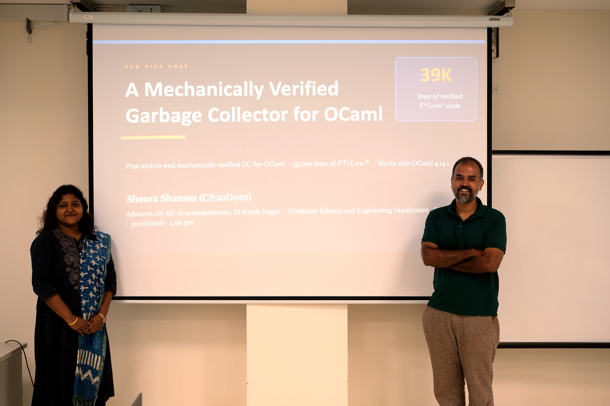

News & Updates
2026
Jul 2026
🎓 IIT Madras 63rd Convocation — PhD Degree Conferred
Received the Doctor of Philosophy degree at the 63rd Convocation of IIT Madras, 17 July 2026, for the thesis "A Mechanically Verified Garbage Collector for OCaml" (CS20D001).
📄 Read the thesis (PDF, 189 pages)
My advisor Dr. KC Sivaramakrishnan's greatest vision was that his student's thesis should not sit on a shelf. By finding its way into the F* team's work toward an agentic, proof-oriented path to a verified drop-in replacement GC for OCaml 5, I believe we are on exactly that path — the thesis is alive, not archived.
Received the Doctor of Philosophy degree at the 63rd Convocation of IIT Madras, 17 July 2026, for the thesis "A Mechanically Verified Garbage Collector for OCaml" (CS20D001).
📄 Read the thesis (PDF, 189 pages)
My advisor Dr. KC Sivaramakrishnan's greatest vision was that his student's thesis should not sit on a shelf. By finding its way into the F* team's work toward an agentic, proof-oriented path to a verified drop-in replacement GC for OCaml 5, I believe we are on exactly that path — the thesis is alive, not archived.
Jun 2026
🎓 PhD Defence — Successfully Defended
Successfully defended the PhD thesis "A Mechanically Verified Garbage Collector for OCaml" on 30 June 2026, Department of Computer Science and Engineering, IIT Madras. About 39,000 lines of proof in F*/Low*, compiled to real C code via KaRaMeL, running inside the actual OCaml 4.14.1 runtime — a machine-checked guarantee that the collector never frees memory that is still in use.
The verified core is already being used by the F* team to train LLMs toward generating more sophisticated GCs through agentic, proof-oriented programming, aiming at a true drop-in replacement using F* and Pulse, and eventually OCaml 5's multicore collector.
Advisors: Dr. KC Sivaramakrishnan & Dr. Kartik Nagar, IIT Madras. External examiner: Aseem Rastogi, MSR Bangalore.
Published open access in the Journal of Automated Reasoning, Springer, 2025.
📄 Read the thesis (PDF, 189 pages)
Successfully defended the PhD thesis "A Mechanically Verified Garbage Collector for OCaml" on 30 June 2026, Department of Computer Science and Engineering, IIT Madras. About 39,000 lines of proof in F*/Low*, compiled to real C code via KaRaMeL, running inside the actual OCaml 4.14.1 runtime — a machine-checked guarantee that the collector never frees memory that is still in use.
The verified core is already being used by the F* team to train LLMs toward generating more sophisticated GCs through agentic, proof-oriented programming, aiming at a true drop-in replacement using F* and Pulse, and eventually OCaml 5's multicore collector.
Advisors: Dr. KC Sivaramakrishnan & Dr. Kartik Nagar, IIT Madras. External examiner: Aseem Rastogi, MSR Bangalore.
Published open access in the Journal of Automated Reasoning, Springer, 2025.
📄 Read the thesis (PDF, 189 pages)

Apr 2026
Collaboration with the F* Language Team — pulse-verified-gc (F* Team, Microsoft Research · F*/Pulse)
A verified generational garbage collector for OCaml 4.14, specified in F* and implemented in Pulse. The repository contains shared OCaml heap/object infrastructure, a verified major-heap allocator, a bounded-stack mark-and-sweep major collector, a generational collector with Cheney-style minor collection, SPOT contract audits, KaRaMeL extraction to C, and an OCaml bytecode runtime integration. The active F*/Pulse tree contains 223 .fst/.fsti files and ~104k lines of source. Active development is organised around dependency-scanned builds;
A verified generational garbage collector for OCaml 4.14, specified in F* and implemented in Pulse. The repository contains shared OCaml heap/object infrastructure, a verified major-heap allocator, a bounded-stack mark-and-sweep major collector, a generational collector with Cheney-style minor collection, SPOT contract audits, KaRaMeL extraction to C, and an OCaml bytecode runtime integration. The active F*/Pulse tree contains 223 .fst/.fsti files and ~104k lines of source. Active development is organised around dependency-scanned builds;
make generational checks the common, mark-and-sweep, generational, and SPOT sources. For the detailed design, proof architecture, public contracts, OCaml bridge layout, benchmark table, and current verification boundary, see DESIGN_AND_IMPL.md.
2025
May 2025
Journal paper "A Mechanically Verified Garbage Collector for OCaml" published in Journal of Automated Reasoning, Springer. Read paper →
Oct 2025
Presenter, Session Chair & Official Reviewer — OCaml Workshop 2025, ICFP/SPLASH 2025, Singapore. Mentioned in Anil Madhavapeddy's ICFP 2025 recap. Official profile →
Apr 2025
Funded Invitation — Lean for the Curious Mathematician 2025, ICTS-TIFR, Bengaluru. Invitation-only workshop at one of India's foremost institutions for advanced research in mathematics and theoretical sciences. Event page →
Sep 2024
Joined TKM College of Engineering as Assistant Professor (Govt. Aided & Autonomous, Kollam).
2024
Jun–Aug 2024
Research Intern at Microsoft Research Bangalore — SPDM protocol verification and AVL Tree library in Pulse.
2024
Merged AVL Tree library in Pulse into the official MSR Pulse mainline repository.
2023
Dec 2023
Presented "Towards a Verified GC for OCaml" at RHPL Workshop, IIIT Hyderabad.
Dec 2022
Attended SAT + SMT Workshop, IIT Madras.
Sep 2022
Poster: "A Verified Depth First Search in F*" — CSE Dept Poster Presentation, IIT Madras.